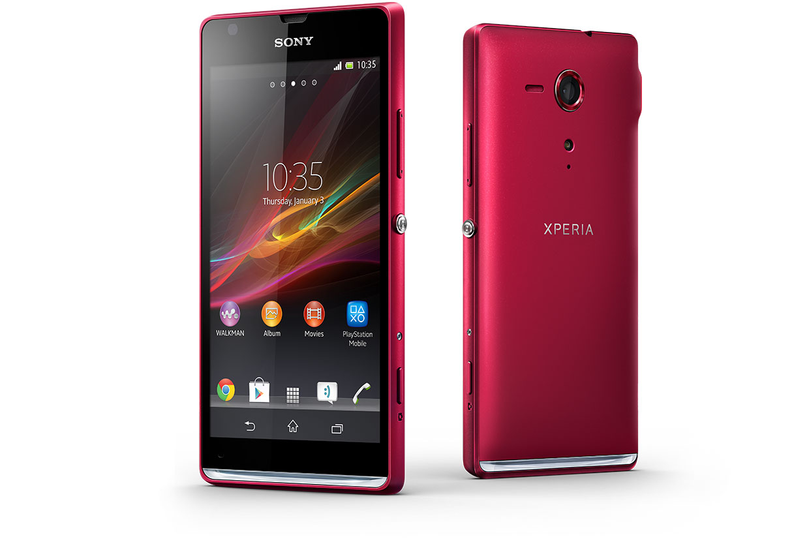
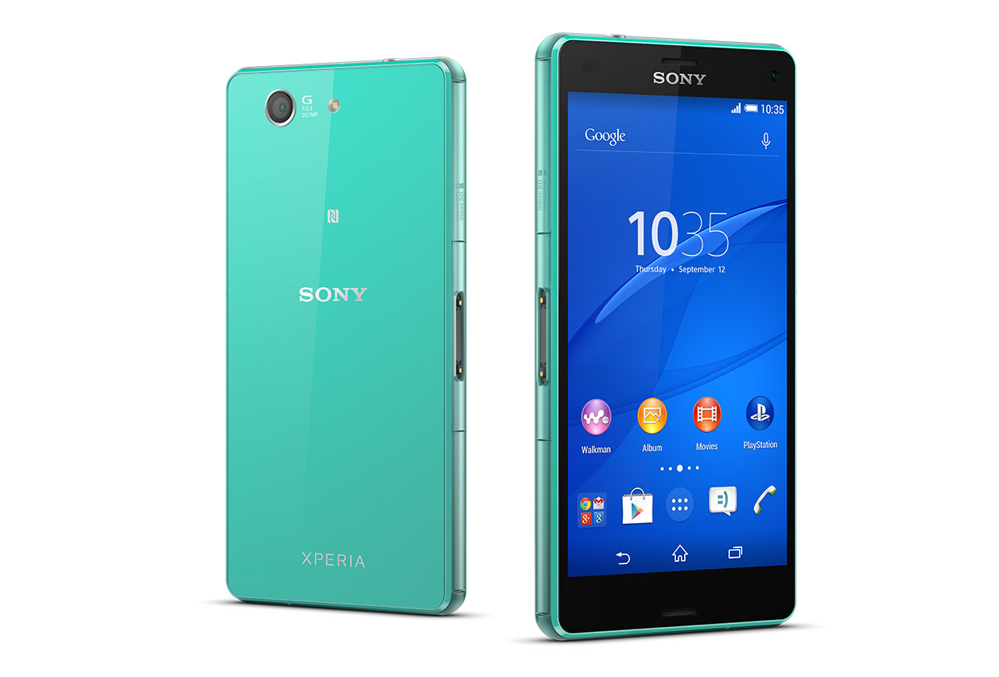
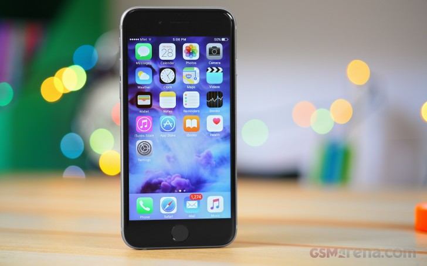
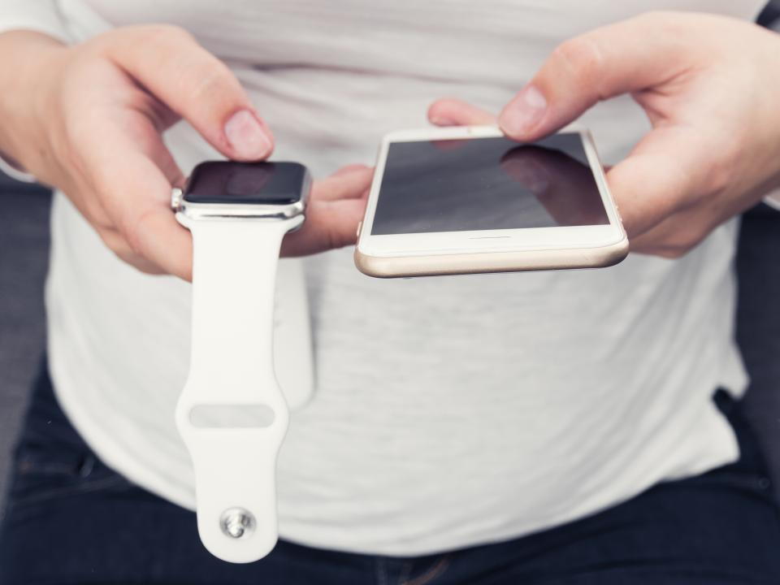

This is one place where you find amazing blogs written by amazing people.
Bookmark your favourite blogs to read them later.
The design connoisseur's smartphone

Sony's Xperia SP is now a year old, but is it still worth picking up a new handset for the full asking price? We revisit this great handset to see if it's been overtaken by its newer rivals.
It's like the Z2, but a lot better

Sony's only gone and done it again. Made a phone, let the paint dry, sell it to the masses, then make another one. The Z followed instantly by the Z1, which was shadowed by the Z2 a few months later at MWC... and now, in what feels like three sleeps later, the Z3 is here.
The only thing that’s changed is everything

This time around it's a little different: the iPhone 6S is both a great upgrade from those 'stuck' on a 5S, and a decent phone in its own right. If you're ready for an upgrade from the old design and are desperate to stick with Apple then this is a great handset to go for.
new bands in March

Although popular among celebrities, the Apple Watch still hasn't turned out to be a runaway hit with regular consumers like the iPhone. Nevertheless, there's been a great deal of interest around when the next version will be released, and now we have a clue. A new report claims that the current version of the Apple Watch will be refreshed with new bands in March and get an entirely new case design in the fall.
The only thing that’s changed is everything
This time around it's a little different: the iPhone 6S is both a great upgrade from those 'stuck' on a 5S, and a decent phone in its own right. If you're ready for an upgrade from the old design and are desperate to stick with Apple then this is a great handset to go for.
The only thing that’s changed is everything
This time around it's a little different: the iPhone 6S is both a great upgrade from those 'stuck' on a 5S, and a decent phone in its own right. If you're ready for an upgrade from the old design and are desperate to stick with Apple then this is a great handset to go for.
It's like the Z2, but a lot better
Your best moments deserve more than dark, blurry shots. Years of Sony camera expertise mean that the Xperia Z3 is packed full of our famous Cyber-shot and Handycam technologies. So every image you capture will be crisp, bright and sharp – exactly as you remember it.
The design connoisseur's smartphone
The Xperia SP HD phone has a Reality Display powered by Mobile BRAVIA® Engine 2. For your viewing pleasure: razor sharp images, vibrant colours and the enhanced contrast you recognize from Sony TV´s.